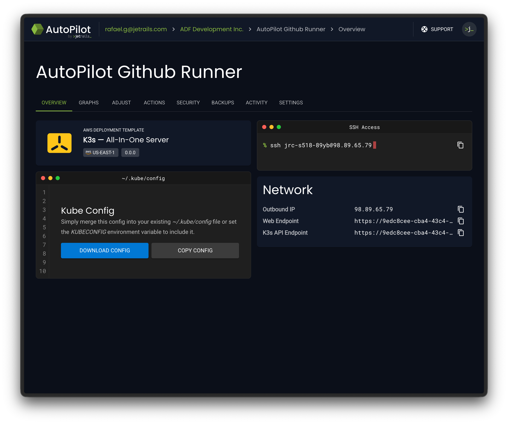
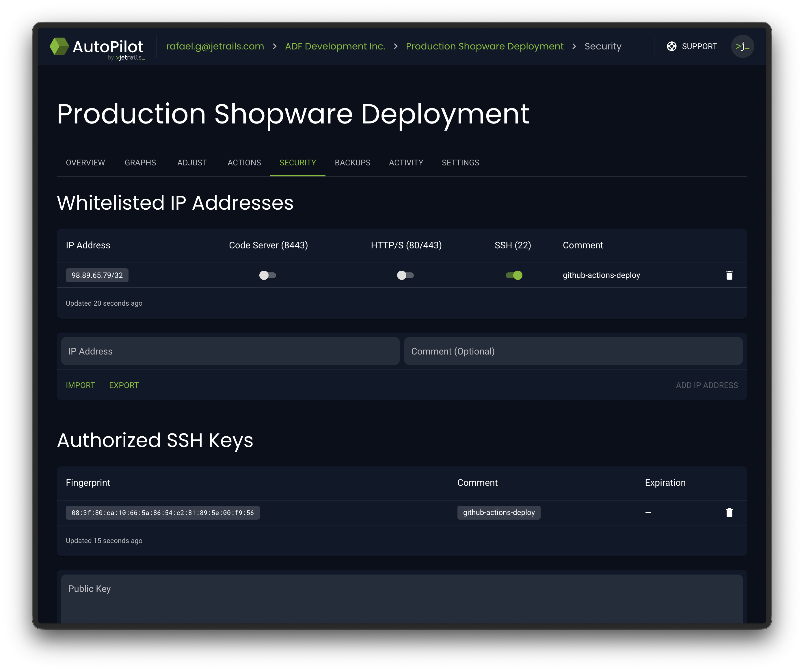
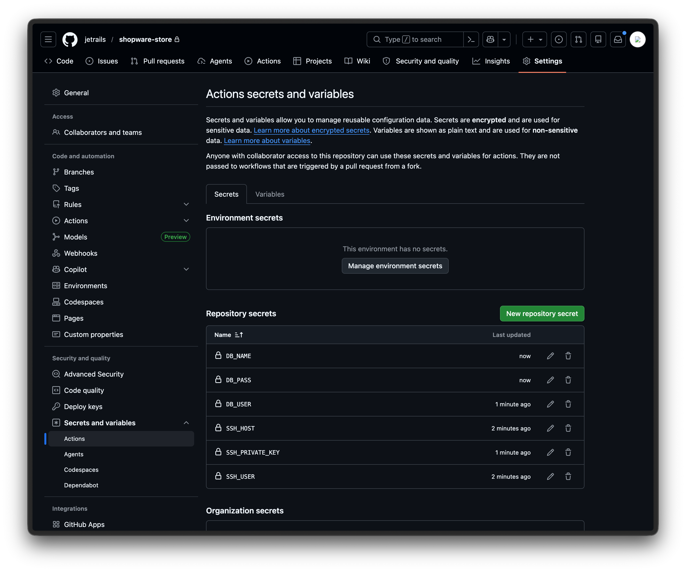
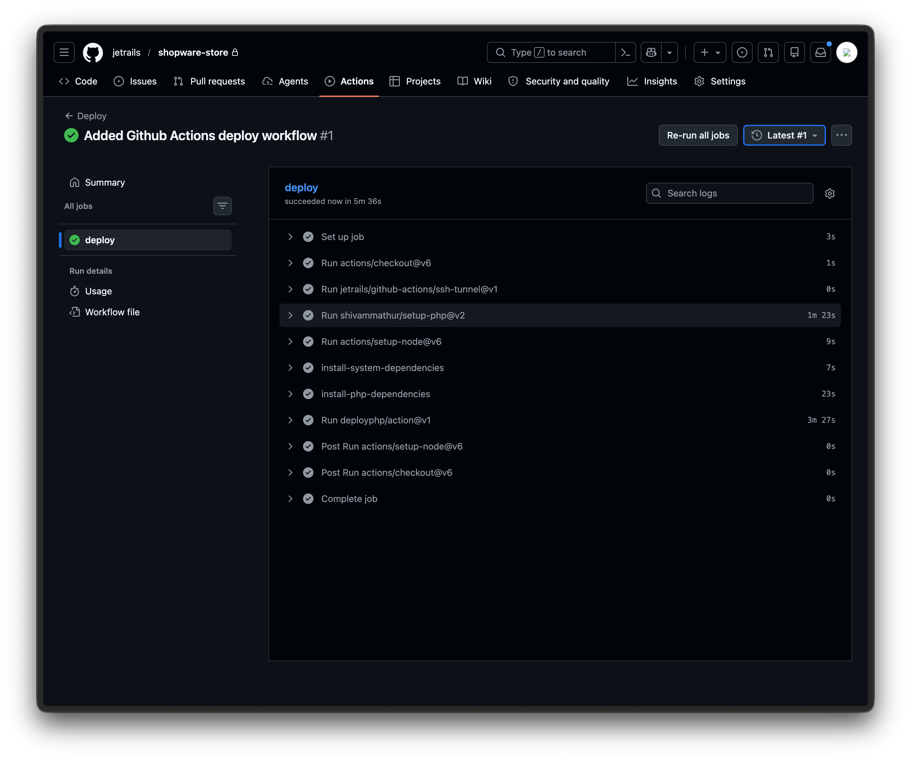

Deploy Shopware With GitHub Actions
This guide takes you from having no deployment pipeline to a fully automated GitOps workflow for your Shopware store on JetRails AutoPilot.
Using Deployer PHP and GitHub Actions, we will set up a pipeline where pushing to your master branch automatically builds and deploys your Shopware store to production.
This guide assumes you have a Shopware deployment on JetRails AutoPilot and a GitHub repository containing your Shopware project.
Assumption:
We assume the store's domain name is example.com and the default branch is master.
Dedicated GitHub Action Runner
GitHub's hosted runners use a large and frequently changing pool of IP addresses, making it impractical to whitelist them all. The recommended approach is to use a self-hosted runner whose outbound IP address you control. If you are using the JetRails AutoPilot K3s template, you can set up a self-hosted runner using Actions Runner Controller (ARC) by following the Self-Hosted GitHub Action Runners guide.
The rest of this guide assumes you have a self-hosted runner named autopilot-github-runner ready to accept workflow jobs.
Install AutoPilot Recipe
In your Shopware project's repository, install the jetrails/deployer-autopilot deployer recipe using Composer.
composer require jetrails/deployer-autopilotThis will update your composer.json and composer.lock files. You should commit these changes to your Github repository.
Create SSH Key Pair
Generate a dedicated SSH key pair for the deployment pipeline. This key will be used in your Github Action's workflow to connect to your Shopware deployment on AutoPilot:
ssh-keygen -t ed25519 -f ./deploy_key -N "" -C "github-actions-deploy"This creates 2 files in the current directory.
The public key is deploy_key.pub and the private key is deploy_key.
Warning
Do not accidentally commit these files to your repository.
Whitelist & Authorize Connection
We will have to whitelist the outbound IP address of your self-hosted runner as well as authorize the SSH key (that we just made) on your Shopware deployment.
First start by going to the Overview tab of your K3s deployment in AutoPilot. There you will find the Outbound IP address of your self-hosted runner in the Network card.

Take note of this IP address and head to the Security tab in your Shopware deployment in AutoPilot.
Once there, you can whitelist the outbound IP address of your self-hosted runner and whitelist the SSH port for that IP address.
While you are there, also whitelist the SSH key using the contents of the deploy_key.pub file.

Setup Github Repository Secrets
Next, create the following Repository secrets in your Github repository under Settings > Secrets and variables > Actions:
Additionally, we will set credentials to setup a database connection since the default Shopware recipe requires it. You can find these values in the Database card on the Overview tab of your Shopware deployment in the AutoPilot dashboard.

Customize Deployer File
You can find an example deploy.php file here. Put this file in the root of your repository and customize it to fit your Shopware deployment.
Out of the box, you should only need to change the primary_domain to match your store's domain.
The cluster_user and elastic_ip values are read from environment variables that our workflow will pass to Deployer:
set("primary_domain", "example.com");
set("cluster_user", getenv("SSH_USER"));
set("elastic_ip", getenv("SSH_HOST"));Once you have customized the deploy.php file, you can commit it to your repository.
Create Github Actions Workflow
Create a file at this path relative to your repository: .github/workflows/deploy.yml.
Put the following contents in this file:
name: Deploy
on:
push:
branches:
- master
jobs:
deploy:
runs-on: autopilot-github-runner
steps:
- uses: actions/checkout@v6
- uses: jetrails/github-actions/ssh-tunnel@v1
with:
ssh-user: ${{ secrets.SSH_USER }}
ssh-host: ${{ secrets.SSH_HOST }}
ssh-private-key: ${{ secrets.SSH_PRIVATE_KEY }}
source-port: "3306"
target-port: "3306"
target-host: database.internal
- uses: shivammathur/setup-php@v2
with:
php-version: '8.4'
tools: composer
- uses: actions/setup-node@v6
with:
node-version: '22'
- name: install-system-dependencies
run: sudo apt-get update && sudo apt-get install -y rsync
- name: install-php-dependencies
run: composer install --no-interaction --prefer-dist --no-dev
- uses: deployphp/action@v1
env:
SSH_USER: ${{ secrets.SSH_USER }}
SSH_HOST: ${{ secrets.SSH_HOST }}
DATABASE_URL: mysql://${{ secrets.DB_USER }}:${{ secrets.DB_PASS }}@127.0.0.1/${{ secrets.DB_NAME }}
with:
dep: deploy
private-key: ${{ secrets.SSH_PRIVATE_KEY }}Here is a breakdown of what each step does:
- Clones your repository onto the runner
- Opens an SSH tunnel to your database, making it accessible at
127.0.0.1:3306for theme compilation - Installs PHP and Composer (customize
php-versionto match your deployment) - Installs Node.js (customize
node-versionto match your deployment) - Installs
rsync, which Deployer uses to upload files to the server (default code update strategy) - Installs production PHP dependencies via Composer
- Runs Deployer using the official deployphp/action with a
DATABASE_URLpointing to the tunneled connection
Once you commit this file and push to the master branch, the workflow will run automatically.
Verify Workflow Run
Once the workflow runs, you can monitor its progress under the Actions tab in your GitHub repository. Click into the run to see the details of each step. A successful run will show all steps completed with a checkmark.

Possible Optimizations
If you want your workflow runs to execute faster, consider creating a custom runner image that already has PHP, Node.js, Composer, and rsync pre-installed. This way, you can skip the setup steps and go straight to installing dependencies and deploying.